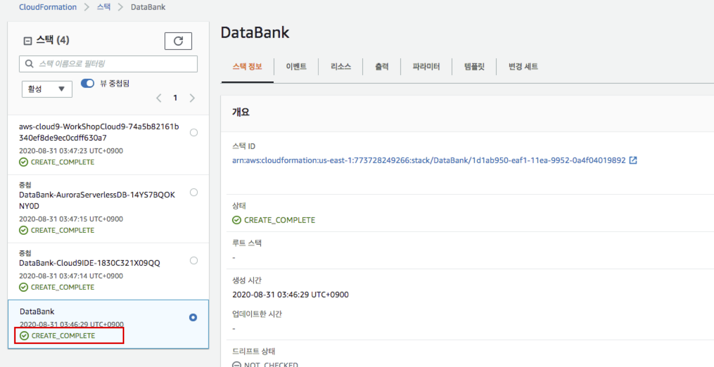
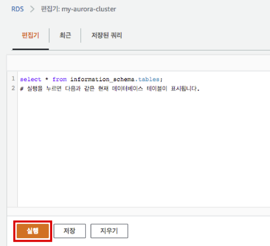
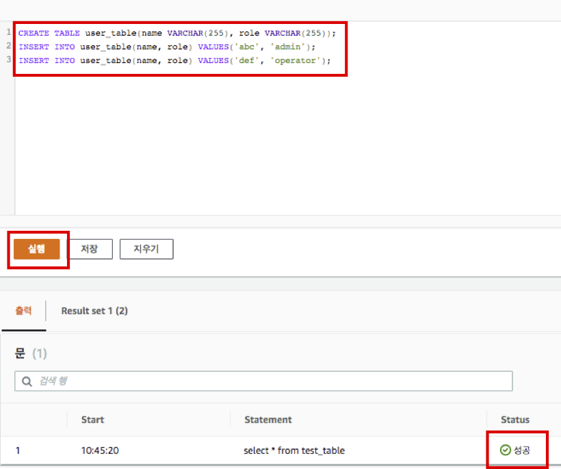

실습2. API Gateway, Lambda로 Aurora 데이터 가져오기
실습 소개
이번 실습 에서는 API Gateway, Lambda를 이용해서 Aurora에 저장된 데이터를 가져오는 실습을 진행할 예정입니다.
실습 아키텍처
CloudFormation으로 Aurora Serverless 구성
CloudFormation은 사용하면 텍스트 파일 또는 프로그래밍 언어로 전체 인프라와 애플리케이션 리소스를 모델링할 수 있습니다. 이를 통하여 VPC 및 Aurora Serverless몇 번의 클릭 만으로 구성 할 수 있습니다.
- AWS Management Console에 로그인 합니다. (Region : us-east-1)
- AWS Cloudformation for Aurora Serverless 접속합니다.
- 기본 설정을 확인 합니다. VPC 및 Subnet CIDR이 기존에 생성되어 있는 것과 겹치지 않으면, 변경 하지 않고, 화면 제일 하단에 있는 체크 박스 두개를 모두 선택한 후 스택 생성 버튼을 클릭합니다.
- 스택 생성 버튼을 누르면 아래와 같은 화면으로 리다이렉트 됩니다. 모든 Stack이 CREATE_COMPLETE 될때 까지 기다립니다.(약 10분 ~ 20분 소요) 
Query Editor를 이용하여 간단한 쿼리 수행
CloudFormation으로 Aurora Serverless를 프로비져닝 하였습니다. Query Editor를 이용하여 Sample Query를 수행합니다. 그리고 집계 테이블을 가져오기 위한 Glue ETL 작업을 수행하기 전에 Aurora에 테이블을 생성 합니다.
- RDS Console에 접속합니다.
- 좌측 메뉴에서 Query Editor를 선택합니다.

- 생성된 Aurora Cluster my-aurora-cluster 를 선택하고, 데이터베이스 사용자 이름은 새 데이터베이스 자격 증명 추가를 선택 합니다.
- 옵션을 아래와 같이 입력 합니다.
데이터베이스에 연결
버튼을 누릅니다.
- 데이터베이스 사용자 이름 입력: MyAdmin
- 데이터베이스 암호 입력: Init12345
- 데이터베이스 이름 입력: mydb
- 연결 중… 에서 편집기로 리다이렉트 됩니다.
- 생성 된 Sample Query를 수행 하기 위해, 실행 버튼을 누릅니다. Aurora Serverless 이기 때문에 약간 delay가 발생할 수 있습니다.
select * from information_schema.tables;
 7. 테스트 하기 위한 간단한 테이블을 생성합니다. 아래 쿼리를 수행 후 실행 버튼을 누릅니다. 실행 후 Status가 성공 인지 확인 합니다.
CREATE TABLE user_table(name VARCHAR(255), role VARCHAR(255));
INSERT INTO user_table(name, role) VALUES('abc', 'admin');
INSERT INTO user_table(name, role) VALUES('def', 'operator');

AWS Lambda 생성
Aurora에 저장된 데이터를 가지고 올 수 있는 AWS Lambda 함수를 생성합니다.
- Lambda를 생성하기 전에 Aurora Serverless를 접속하기 위한 접속 정보를 확인 합니다.
- cluster arn 확인 하는 방법
- Aurora 데이터베이스 Console에 접속합니다.
- 생성된 my-aurora-cluster 클릭 합니다.
- 구성 탭을 선택하고 cluster arn 정보를 확인 합니다.(e.g arn:aws:rds:us-east-1:773728249266:cluster:my-aurora-cluster)
- secret arn 확인 하는 방법
- Secrets Manager Console에 접속합니다.
- Aurora 접속시 생성된 보안 암호 이름 을 선택합니다
- 보안 암호 ARN을 확인 합니다 (e.g arn:aws:secretsmanager:us-east-1:773728249266:secret:rds-db-credentials/cluster-NE5IADIOTWINCMB4JMZMV3KVDQ/MyAdmin-S7nkrf)
- cluster arn 확인 하는 방법
- Lambda Console에 접속합니다.
-
함수 생성
버튼을 누릅니다.

- 새로 작성 상태에서, 함수 이름은 MyAurora, 런타임은 Python 3.7 을 선택하고, 함수 생성 버튼을 누릅니다.
- 함수 코드를 아래 코드로 변경 합니다. cluster_arn 과 secret_arn은 확인한 정보로 변경 합니다. 변경 후 저장 버튼을 누릅니다.
import boto3
import json
# Update your cluster and secret ARNs
cluster_arn = '<arn:aws:rds:us-east-1:~>'
secret_arn = '<arn:aws:secretsmanager:~>'
def lambda_handler(event, context):
operation = event['operation']
if 'get' == operation:
queryResult = get_rds_data_api()
elif 'para' == operation:
queryResult = get_para_rds_data_api(event['payload']['role'])
return queryResult
def get_rds_data_api():
rds_data = boto3.client('rds-data')
sql = """
SELECT * FROM user_table
"""
response = rds_data.execute_statement(
resourceArn = cluster_arn,
secretArn = secret_arn,
database = 'mydb',
sql = sql)
return response
def get_para_rds_data_api(payload):
rds_data = boto3.client('rds-data')
sql = """
SELECT * FROM user_table where role = :para1
"""
message_value = payload
para1 = [{'name':'para1', 'value':{'stringValue': f'{message_value}'}}]
response = rds_data.execute_statement(
resourceArn = cluster_arn,
secretArn = secret_arn,
database = 'mydb',
sql = sql,
parameters = para1)
return response
5. 수행시간이 긴 Query 를 위해 Lambda 수행 제한시간을 1분으로 늘려 줍니다. 하단의 기본 설정 에 편집을 선택 합니다 6. 제한 시간을 1 분으로 변경하고, 저장 버튼을 누릅니다. 7. Lambda가 Aurora를 접속 할 수 있도록, 실행 권한을 부여합니다. 8. 우측 상단에 권한 탭을 선택 후, 역할 이름 아래 있는 링크를 클릭 합니다. 9. IAM 콘솔로 리다이렉트 됩니다. 정책 연결 버튼을 누릅니다. 10. AmazonRDSDataFullAccess 정책을 검색한 후 정책 연결 버튼을 누릅니다.
Amazon API Gateway - REST API 생성
REST API Request가 들어오면 이전에 생성한 Lambda 함수를 실행하는 API를 생성합니다
- API Gateway Console에 접속합니다.
- REST API 생성을 위해 구축 버튼을 누릅니다.
- 새 API 선택 합니다. API 이름은 MyApi 로 입력합니다. API 생성 버튼을 누릅니다.
- 작업 버튼을 누르고 메서드 생성 을 선택합니다.
- POST 메서드를 선택하고 v 를 누릅니다.
- 메서드에 포인트를 Lambda 함수 로 선택하고 Lambda 함수는 이전에 생성한 MyAurora 를 입력합니다. 저장 버튼을 누릅니다.
- API의 Lambda 함수에 대한 권한 추가를 위해 확인 버튼을 누릅니다.
- 작업 버튼을 누르고, API 배포 를 선택합니다.
- 배포 스테이지는 새 스테이지를 선택하고 스테이지 이름을 PROD로 입력합니다. 배포 버튼을 누릅니다.
REST API 테스트
- API Gateway Console에 접속합니다.
- 생성한 API MyApi 를 선택합니다.
- 생성한 메소드 POST 를 선택합니다. 그리고 테스트 를 선택합니다.
- 요청 본문에 아래와 같이 입력하고
태스트
버튼을 누릅니다.
- 테이블에 전체 데이터를 가지고 오는 요청
{
"operation": "get"
}
- 요청 본문에 아래와 같이 입력하고
태스트
버튼을 누릅니다.
- role 이 admin 인 유저 데이터를 가지고 오는 요청
{
"operation": "para",
"payload":
{
"role": "admin"
}
}
실습1, 2가 모두 완료 되었습니다, 수고하셨습니다.